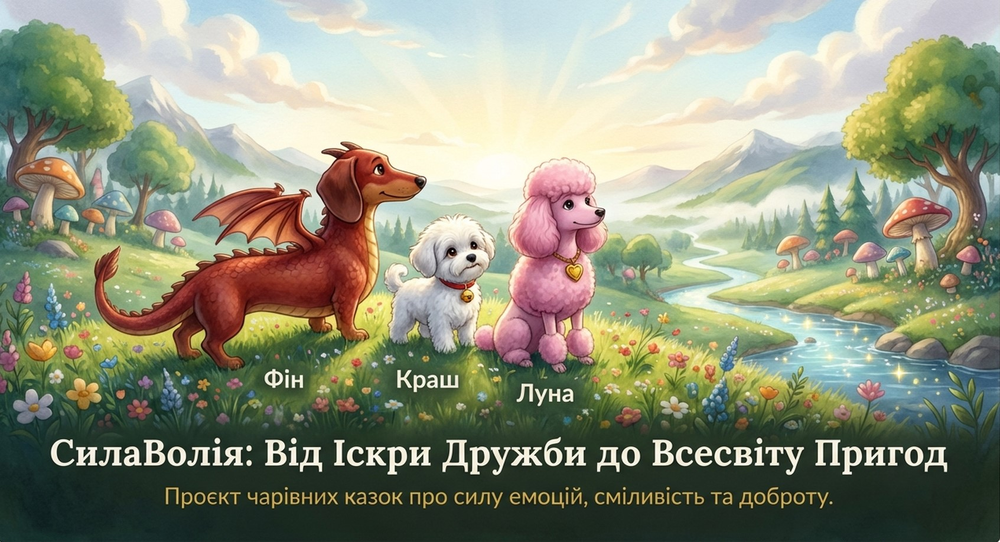

Ласкаво просимо до світу, де смуток завжди відступає.
Головний антагоніст — демон-темносил у вигляді маленької сірої хмаринки. Він несе смуток, нудьгу та змушує забувати радісні моменти. Але наші герої знають, як перетворити його сірі камінці назад на яскраві емоції!
Кожна історія — це битва не на фізичну силу, а на силу емоцій.
У серці кожної пригоди — нерозлучна трійця, чия сила — в їхній єдності:
Найдобріший дракончик-такса, що розганяє сум веселковим димом.
Втілення чистої радості, чий дзвіночок заряджає енергією та оптимізмом.
Стратег і мудра болонка, чий сяючий медальйон допомагає знайти вірне рішення.